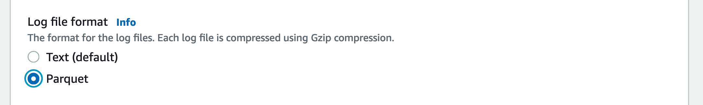
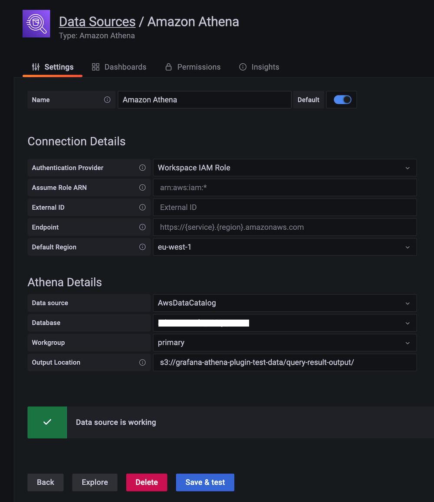
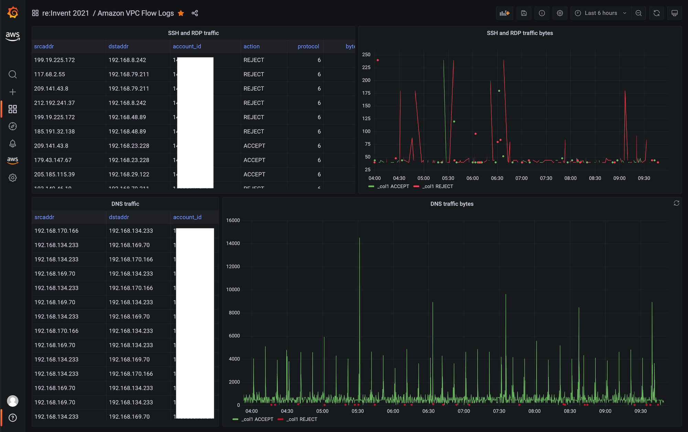

Using Athena in Amazon Managed Grafana¶
Warning
This site is being merged into the broader Observability Best Practices content. Please head over there for the latest updates, plus prescriptive guidance on the use of AWS observability tools.
Warning
This site will be kept as-is until January 2023, when it will be decommissioned.
In this recipe we show you how to use Amazon Athena—a serverless, interactive query service allowing you to analyze data in Amazon S3 using standard SQL—in Amazon Managed Grafana. This integration is enabled by the Athena data source for Grafana, an open source plugin available for you to use in any DIY Grafana instance as well as pre-installed in Amazon Managed Grafana.
Note
This guide will take approximately 20 minutes to complete.
Prerequisites¶
- The AWS CLI is installed and configured in your environment.
- You have access to Amazon Athena from your account.
Infrastructure¶
Let's first set up the necessary infrastructure.
Set up Amazon Athena¶
We want to see how to use Athena in two different scenarios: one scenario around geographical data along with the Geomap plugin, and one in a security-relevant scenario around VPC flow logs.
First, let's make sure Athena is set up and the datasets are loaded.
Warning
You have to use the Amazon Athena console to execute these queries. Grafana in general has read-only access to the data sources, so can not be used to create or update data.
Load geographical data¶
In this first use case we use a dataset from the Registry of Open Data on AWS. More specifically, we will use OpenStreetMap (OSM) to demonstrate the usage of the Athena plugin for a geographical data motivated use case. For that to work, we need to first get the OSM data into Athena.
So, first off, create a new database in Athena. Go to the Athena console and there use the following three SQL queries to import the OSM data into the database.
Query 1:
CREATE EXTERNAL TABLE planet (
id BIGINT,
type STRING,
tags MAP<STRING,STRING>,
lat DECIMAL(9,7),
lon DECIMAL(10,7),
nds ARRAY<STRUCT<ref: BIGINT>>,
members ARRAY<STRUCT<type: STRING, ref: BIGINT, role: STRING>>,
changeset BIGINT,
timestamp TIMESTAMP,
uid BIGINT,
user STRING,
version BIGINT
)
STORED AS ORCFILE
LOCATION 's3://osm-pds/planet/';
Query 2:
CREATE EXTERNAL TABLE planet_history (
id BIGINT,
type STRING,
tags MAP<STRING,STRING>,
lat DECIMAL(9,7),
lon DECIMAL(10,7),
nds ARRAY<STRUCT<ref: BIGINT>>,
members ARRAY<STRUCT<type: STRING, ref: BIGINT, role: STRING>>,
changeset BIGINT,
timestamp TIMESTAMP,
uid BIGINT,
user STRING,
version BIGINT,
visible BOOLEAN
)
STORED AS ORCFILE
LOCATION 's3://osm-pds/planet-history/';
Query 3:
CREATE EXTERNAL TABLE changesets (
id BIGINT,
tags MAP<STRING,STRING>,
created_at TIMESTAMP,
open BOOLEAN,
closed_at TIMESTAMP,
comments_count BIGINT,
min_lat DECIMAL(9,7),
max_lat DECIMAL(9,7),
min_lon DECIMAL(10,7),
max_lon DECIMAL(10,7),
num_changes BIGINT,
uid BIGINT,
user STRING
)
STORED AS ORCFILE
LOCATION 's3://osm-pds/changesets/';
Load VPC flow logs data¶
The second use case is a security-motivated one: analyzing network traffic using VPC Flow Logs.
First, we need to tell EC2 to generate VPC Flow Logs for us. So, if you have not done this already, you go ahead now and create VPC flow logs either on the network interfaces level, subnet level, or VPC level.
Note
To improve query performance and minimize the storage footprint, we store the VPC flow logs in Parquet, a columnar storage format that supports nested data.
For our setup it doesn't matter what option you choose (network interfaces, subnet, or VPC), as long as you publish them to an S3 bucket in Parquet format as shown below:

Now, again via the Athena console, create the table for the VPC flow logs data in the same database you imported the OSM data, or create a new one, if you prefer to do so.
Use the following SQL query and make sure that you're replacing
VPC_FLOW_LOGS_LOCATION_IN_S3 with your own bucket/folder:
CREATE EXTERNAL TABLE vpclogs (
`version` int,
`account_id` string,
`interface_id` string,
`srcaddr` string,
`dstaddr` string,
`srcport` int,
`dstport` int,
`protocol` bigint,
`packets` bigint,
`bytes` bigint,
`start` bigint,
`end` bigint,
`action` string,
`log_status` string,
`vpc_id` string,
`subnet_id` string,
`instance_id` string,
`tcp_flags` int,
`type` string,
`pkt_srcaddr` string,
`pkt_dstaddr` string,
`region` string,
`az_id` string,
`sublocation_type` string,
`sublocation_id` string,
`pkt_src_aws_service` string,
`pkt_dst_aws_service` string,
`flow_direction` string,
`traffic_path` int
)
STORED AS PARQUET
LOCATION 'VPC_FLOW_LOGS_LOCATION_IN_S3'
For example, VPC_FLOW_LOGS_LOCATION_IN_S3 could look something like the
following if you're using the S3 bucket allmyflowlogs:
s3://allmyflowlogs/AWSLogs/12345678901/vpcflowlogs/eu-west-1/2021/
Now that the datasets are available in Athena, let's move on to Grafana.
Set up Grafana¶
We need a Grafana instance, so go ahead and set up a new Amazon Managed Grafana workspace, for example by using the Getting Started guide, or use an existing one.
Warning
To use AWS data source configuration, first go to the Amazon Managed Grafana console to enable service-mananged IAM roles that grant the workspace the IAM policies necessary to read the Athena resources. Further, note the following:
- The Athena workgroup you plan to use needs to be tagged with the key
GrafanaDataSourceand valuetruefor the service managed permissions to be permitted to use the workgroup. - The service-managed IAM policy only grants access to query result buckets
that start with
grafana-athena-query-results-, so for any other bucket you MUST add permissions manually. - You have to add the
s3:Get*ands3:List*permissions for the underlying data source being queried manually.
To set up the Athena data source, use the left-hand toolbar and choose the lower AWS icon and then choose "Athena". Select your default region you want the plugin to discover the Athena data source to use, and then select the accounts that you want, and finally choose "Add data source".
Alternatively, you can manually add and configure the Athena data source by following these steps:
- Click on the "Configurations" icon on the left-hand toolbar and then on "Add data source".
- Search for "Athena".
- [OPTIONAL] Configure the authentication provider (recommended: workspace IAM role).
- Select your targeted Athena data source, database, and workgroup.
- If your workgroup doesn't have an output location configured already,
specify the S3 bucket and folder to use for query results. Note that the
bucket has to start with
grafana-athena-query-results-if you want to benefit from the service-managed policy. - Click "Save & test".
You should see something like the following:

Usage¶
And now let's look at how to use our Athena datasets from Grafana.
Use geographical data¶
The OpenStreetMap (OSM) data in Athena can answer a number of questions, such as "where are certain amenities". Let's see that in action.
For example, a SQL query against the OSM dataset to list places that offer food in the Las Vegas region is as follows:
SELECT
tags['amenity'] AS amenity,
tags['name'] AS name,
tags['website'] AS website,
lat, lon
FROM planet
WHERE type = 'node'
AND tags['amenity'] IN ('bar', 'pub', 'fast_food', 'restaurant')
AND lon BETWEEN -115.5 AND -114.5
AND lat BETWEEN 36.1 AND 36.3
LIMIT 500;
Info
The Las Vegas region in above query is defined as everything with a latitude
between 36.1 and 36.3 as well as a longitude between -115.5 and -114.5.
You could turn that into a set of variables (one for each corner) and make
the Geomap plugin adaptable to other regions.
To visualize the OSM data using above query, you can import an example dashboard, available via osm-sample-dashboard.json that looks as follows:

Note
In above screen shot we use the Geomap visualization (in the left panel) to plot the data points.
Use VPC flow logs data¶
To analyze the VPC flow log data, detecting SSH and RDP traffic, use the following SQL queries.
Getting a tabular overview on SSH/RDP traffic:
SELECT
srcaddr, dstaddr, account_id, action, protocol, bytes, log_status
FROM vpclogs
WHERE
srcport in (22, 3389)
OR
dstport IN (22, 3389)
ORDER BY start ASC;
Getting a time series view on bytes accepted and rejected:
SELECT
from_unixtime(start), sum(bytes), action
FROM vpclogs
WHERE
srcport in (22,3389)
OR
dstport IN (22, 3389)
GROUP BY start, action
ORDER BY start ASC;
Tip
If you want to limit the amount of data queried in Athena, consider using
the $__timeFilter macro.
To visualize the VPC flow log data, you can import an example dashboard, available via vpcfl-sample-dashboard.json that looks as follows:

From here, you can use the following guides to create your own dashboard in Amazon Managed Grafana:
That's it, congratulations you've learned how to use Athena from Grafana!
Cleanup¶
Remove the OSM data from the Athena database you've been using and then the Amazon Managed Grafana workspace by removing it from the console.